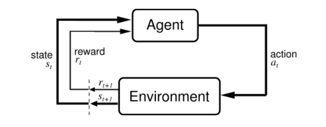

import gymnasium as gym
import time
env = gym.make("CarRacing-v3", continuous=True, render_mode="human")
state, info = env.reset()
done = False
while not done:
start = time.time()
action = env.action_space.sample()
next_state, reward, done, truncated, info = env.step(action)
if time.time() - start > 1000:
break
env.close()An Introduction to Reinforcement Learning with Practical Examples
Introduction: What is Reinforcement Learning (RL)
I will start this article off with a little bit of mathematical background about Reinforcement Learning and how it works, so that readers have a strong base of knowledge and are able to understand some of the algorithms and methods at work.
Below is the layout of this article:
- What is Reinforcement Learning (RL)
- Key Terminology
- Policies
- Trajectories
- Rewards and Return
- The formulation of an RL problem
- Value Functions
- Bellman Equations and the Advantage Function
- Policy Optimization
- Q Learning
- Solving CarRacing-v3 using Proximal Policy Optimization (PPO)
Reinforcement Learning (RL) is a machine learning paradigm inspired by how humans and animals learn through interactions with their environment. The core idea is that an agent learns to make decisions by interacting with an environment, aiming to maximize long term cumulative rewards.
The environment is the world that the agent lives in and interacts with. At every step of interaction, the agent sees an observation of the state of the world (or environment), and then decides which action to take. The environment changes when the agent acts on it, but it may also change on its own.
The agent also perceives a reward from the environment. The reward is a number that tells the agent how good or bad the current world state is. The goal of the agent is to maximize its cumulative reward. This cumulative reward is known as the return. Reinforcement Learning methods are ways that the agent can learn behaviours to achieve its goal and maximize long term return
Reinforcement Learning is built around the agent environment loop, as shown in the diagram below:

Key Terminology & Mathematical Background
Below I will explain how the agent environment interaction works, and the core terminology behind it as we will use it extensively later on in this article.
State \((S_t)\): This is the current state of the environment. The environment provides the agent with a representation of its current situation, which we refer to as the state. For example, in a game, the state could be the positions of all characters on screen or in the scene.
Action \((A_t)\): Based on the current state, the agent chooses an action from its set of possible actions. The set of possible actions for an agent is known as the action space. In a simple self driving car, this could mean steering left, steering right, accelerate, or brake.
Policies
Policy \((\pi)\): A policy is a rule used by an agent to decide what actions to take. It can be deterministic, in which case it’s usually denoted by \(\mu\):
\[ a_t = \mu(s_t) \]
or it may be stochastic, in which case it is usually denoted by \(\pi\):
\[ a_t \sim \pi(\cdot | s_t) \]
\(a_t \sim \pi\) means that \(a\) is sampled from \(\pi\), since \(\pi\) is a distribution.
In deep RL, we deal with parameterized policies which are policies whose outputs are computable functions that depend on a set of parameters (such as the weights and biases of a neural network) which we can adjust to change the behavior via some optimization algorithm. Oftentimes the parameters of such a policy are denoted by \(\theta\) or \(\phi\), and are written as follow
\[ a_t = \mu_\theta(s_t) \ (deterministic \ policy) \] \[ a_t \sim \pi_\theta(s_t) \ (stochastic \ policy) \]
Trajectories
A trajectory \(\tau\) is a sequence of states and actions in the world
\[ \tau = (s_0, a_0, s_1, a_1, \dots) \]
The first state of the world, \(s_0\) is randomly sampled from the start state distribution, which is sometimes denoted by \(\rho_0\)
\[ s_0 \sim \rho_0(\cdot) \]
State transitions (what happens to the world between the state \(s_t\) at time \(t\), and the state \(s_{t+1}\) at time \(t+1\)) are governed by the natural laws of the environment, and depend only on the most recent action \(a_t\). These can also be either deterministic
\[ s_{t+1} = f(s_t, a_t) \]
or stochastic
\[ s_{t+1} \sim P(\cdot | s_t, a_t) \]
Rewards and Return
The reward function \(R\) is a crucial tool in RL. It depends on the current state of the world, the most recent action that was taken, and the next state of the world/environment:
\[ r_t = R(s_t, a_t, s_t+1) \]
Although most of the time this is simplified to just a dependance on the current state, \(r_t = R(s_t)\) or state action pair \(r_t = R(s_t, a_t)\). Moving forward, I will refer to the return of a trajectory as \(R(\tau)\)
There are 2 main kinds of return. The first is the finite-horizon undiscounted return which is just the sum of rewards obtained in a fixed window of steps
\[ R(\tau) = \sum_{t=0}^{T} r_t \]
The second kind of return is the infinite-horizon undiscounted return which is the sum of all rewards ever obtained by the agent but discounted by how far in the future they are obtained. This forumalation ofthe reward function includes a discount factor \(\gamma \in (0,1)\):
\[ R(\tau) = \sum_{t=0}^{\infty} \gamma^t r_t \]
Some people may think, why do we have the discount factor? do we not want to maximize all rewards? Intuitively, immediate rewards are more valuable that ones that are in the distant future, similar to the notion of money today is better than money later. Mathematically an infinite horizon sum of rewards may not converge to a finite value, and is hard to deal with in equations and hence in code. But with a discount factor under resonable conditions, the infinite sum converges.
The RL Problem
Whichever return measure we use (finite or infinite horizon) and whichever policy we choose, the goal in RL is to select a policy which maximized the expected return when the agent acts according to it. To talk about expectedd return, we first need to talk about probability distributions over trajectories.
Lets suppose that both the environment transitions and the policy are stochastic. In this case, the probability of a \(T\) step trajectory is:
\[ P(\tau|\pi) = \rho_0(s_0)\prod_{t=0}^{T-1} P(s_{t+1}|s_t, a_t)\pi(a_t|s_t) \]
The expected return (for whichever return function) denoted by \(J(\pi)\) is then:
\[ J(\pi) = \int_{\tau} P(\tau|\pi)R(\tau) = \mathbb{E}_{\tau \sim \pi} \left[ R(\tau) \right] \]
The main optimization problem in RL can then be expressed as
\[ \pi^{*} = argmax_\pi \ J(\pi) \]
Where \(\pi^*\) is the optimal policy
Value Functions
Finally I will introduce the notion of value functions and then proceed to talk about a technique known as Q learning.
Oftentimes we want to know the value of a state, or state action pair. The value in this context means the expected return if you start in taht state or state action pair, and then act according to a particular policy.
There are 4 main functions of importance here
- The On-Policy Value Function, \(V^\pi(s)\), which gives the expected return if you start in state \(s\) and always act according to policy \(\pi\):
\[ V^\pi(s) = \mathbb{E}_{\tau \sim \pi} \left[ R(\tau) | s_0 = s\right] \]
- The On-Policy Action-Value Function, \(Q^\pi(s, a)\), which gives us the expected return if we start at state \(s\) and take action \(a\) then follow the policy \(\pi\) indefinitely. The inital action \(a\) does not necessarily need to come from the policy
\[ Q^\pi(s, a) = \mathbb{E}_{\tau \sim \pi} \left[ R(\tau) | s_0 = s, a_0 = a\right] \]
- The Optimal Value Function, \(V^*(s)\) which gives the expected return if you start at state \(s\) then always act according to the optimal policy
\[ V^*(s) = max_\pi\mathbb{E}_{\tau \sim \pi} \left[ R(\tau) | s_0 = s\right] \]
- The Optimal Action Value Function, \(Q^*(s, a)\) which gives the expected return if we start at state \(s\) and take action \(a\) then always act according to the optimal policy
\[ Q^*(s, a) = max_\pi\mathbb{E}_{\tau \sim \pi} \left[ R(\tau) | s_0 = s, a_0 = a\right] \]
Bellman Equations
One of the most important concepts in reinforcement learning (RL) is the Bellman Equations. These equations form the mathematical backbone of RL by describing how the value of a state or action depends on the reward received and the values of subsequent states. In short the basic idea behind the bellman equations is this: *The value of being in a state is the reward you expect to get from being there, plus the value of where you end up next.
This concept is crucial because it allows us to break down the problem of finding the best actions over an entire sequence of decisions into smaller, easier to solve pieces.
The Bellman equations for the on-policy value functions are
\[ V^\pi(s) = \mathbb{E}_{a \sim \pi, s' \sim P} \left[ r(s, a) + \gamma V^\pi(s') \right] \] \[ Q^\pi(s, a) = \mathbb{E}_{s' \sim P} \left[ r(s, a) + \gamma \ \mathbb{E}_{a' \sim \pi} \left[ Q^\pi(s', a') \right] \right] \]
where \(s' \sim P\) is shorthand for \(s' \sim P(\cdot | s, a)\), indicating that the next state \(s'\) is sampled from the environment’s transition rules. Similarly, \(a \sim \pi\) is shorthand for \(s \sim \pi(\cdot | s)\) and \(a' \sim \pi\) is shorthand for \(a' \sim \pi(\cdot | s')\)
The bellman equations for the optimal value functions are:
\[ V^*(s) = max_a \ \mathbb{E}_{s' \sim P} \left[ r(s, a) + \gamma V^*(s') \right] \]
\[ Q^* = \mathbb{E}_{s' \sim P} \left[ r(s, a) + \gamma \ max_{a'} \ Q^*(s',a') \right] \]
Advantage Function
Sometimes in RL we need to describe how good an action is relative to the others and not in an absolute sense. This means that we want to know the relative advantage of that action. The advantage function \(A^\pi(s,a)\) corresponsing to a policy \(\pi\) describes how much better it is to take a specific action \(a\) in state \(s\), over randomly selecting an action according to \(\pi(\cdot|s)\). Mathematically the advantage function is defined as:
\[ A^\pi(s,a) = Q^\pi(s,a) - V^\pi(s) \]
Policy Optimization
Policy optimization is a family of methods that try to explicitly represent a policy \(\pi_\theta(a|s)\). They optimize the parameters \(\theta\) either directly by using gradient ascent on the performance objective \(J(\pi_\theta)\), or indirectly by maximizing local optimizations of \(J(\pi_\theta)\). This optimization is almost always performed on-policy, which means that each update only uses data collected while acting according to the most recent version of the policy. Policy optimization also usually involves learning an approximator \(V_\phi(s)\) for the on-policy value function \(V^\pi(s)\), which is used to figure out how to update the policy via its parameters.
Q Learning
Q-Learning is a family of methods that try to learn an approximator \(Q_\theta(s,a)\) for the optimal action-value function \(Q*(s,a)\). Typically they use an objective function based on the Bellman Equations. This optimization is almost always performed off-policy, which means that each update can use data collected at any point during training, regardless of how the agent was choosing to explore the environment when the data was obtained. The corresponding policy is obtained via the connection between \(Q^*\) and \(\pi^*\): the actions taken by the Q-Learning agent are given by
\[ a(s) = argmax_a \ Q_\theta(s,a) \]
Solving CarRacing-v3 using Proximal Policy Optimization (PPO)
What is PPO?
Proximal Policy Optimization (PPO) is a reinforcement learning algorithm that belongs to the family of policy gradient methods, where the agent directly learns a parameterized policy \(\pi_\theta(a|s)\) to maximize the cumulative reward in a given environment. The policy is usually parameterized via a nerual network.
PPO improves upon older policy gradient methods by addressing two key challenges:
Instability in Policy Updates: Large updates to the policy can lead to suboptimal behavior or even collapse which just means that the agents policy becomes drastically worse or even completely non functional.
Sample Inefficiency: Many algorithms waste training samples, making learning computationally expensive.
PPO using a clipped objective function to limit how the policy can change in a single update, ensuring stability and efficiency. A clipped objective function ensures that the policy does not change too much in a single update. It limits the magnitude of changes in the probability ratio between the new and old policies. This will be discussed more rigorously a little deeper into this article.
The Math Behind PPO
PPO maximizes the expected total reward: \[ J(\pi_\theta) = \mathbb{E}_{\tau \sim \pi_\theta} \left[ \sum_{t=0}^{T} \gamma^tr_t \right] \]
where:
- \(\tau = (s_0, a_0, r_0, \dots, s_T, a_T, r_T)\) is a trajectory of states, actions, and rewards.
- \(\gamma\) is the discount factor. NOTE: \(\gamma \in (0, 1)\)
- \(r_t\) is the reward at time \(t\)
Instead of directly optimizing this, PPO introduces a surrogate objective to stabilize training:
- Probability Ratio:
\[ r_t(\theta) = \frac{\pi_\theta(a_t | s_t)}{{\pi_\theta}_{old}(a_t|s_t)} \]
This ratio compares the new policy’s probability of choosing action \(a_t\) with the old policy’s probability
- Clipped Objective: PPO uses a clipped objective loss to constrain the policy update:
\[ L^{CLIP}(\theta) = \mathbb{E} \left[min(r_t(\theta)A_t, clip(r_t(\theta), 1-\epsilon, 1+\epsilon)A_t) \right ] \]
where:
- \(A_t\) is the advantage function, estimating how much better the action a_t was compared to the average
- \(\epsilon\) is a small constant which controls the clipping range
The clipping ensures that policy updates are small, preventing the agent from overfitting to noisy or overly optimistic advantage estimates.
- Value Function Loss: PPO also trains a value function V(s_t) to estimate the expected return from a state: \[ L^{VF}(\theta) = \mathbb{E} \left[(V_\theta(s_t) - R_t)^2 \right ] \]
where \(R_t\) is the discounted reward
- \(Final Loss\): The combined loss is defined mathematically as:
\[ L(\theta) = L^{CLIP}(\theta) - c_1L^{VF}(\theta) + c_2\cdot Entropy \ Regularization \]
- Entropy Regularization encourages exploration by penalizing overly deterministic policies
- \(c_1\) and \(c_2\) are weights
The CarRacing problem
CarRacing is a popular problem that is a part of the OpenAI Gymnasium for learning reinforcement learning. It is an environment which consists of a race car and randomized tracks, with the goal being to train an agent which can learn to drive the car optimally around all tracks.
To solve this problem we must first model it as a reinforcement learning problem, to do this we need to define it as a Markov Decision process (MDP). This involves specifying the states, actions, rewards, transition states, and the objective. Defining the MDP will guide us towards designing our RL solution. The documentation for the environment can be found here
- State Space \((S)\): The state space in CarRacing-v3 (which is the environment we will be working with) consists of visual observations from a top down view of the racetrack
- Representation: Each state is an RGB image of size \(96 \times 96 \times 3\), showing the car’s position relative to the racetrack.
- Example State : A snapshot of the track where the car’s position, road layout, and off road areas are visible
- Challenges:
- The state space is high dimensional (image based), requiring a convolutional neural network (CNN) for feature extraction
- Temporal dependancies must be captured. For example, how the car’s position changes over time
Action Space \((A)\): The action space for this environment is continuous and consists of three control variables
- Steering (a_1):
- Controls the car’s direction
- Has a range of \([-1, 1]\) where \(-1\) is a full left turn, \(1\) is a full right turn, and \(0\) means no steering
- Acceleration \((s_2)\):
- Controls the car’s acceleration (gas pedal)
- Has a range of \([0, 1]\), where \(0\) means no acceleration and \(1\) is maximum acceleration
- Brake \((a_3)\):
- Controls the car’s brakes
- Has a range of \([0, 1]\) where \(0\) means no brake pressure and \(1\) means full brake preassure
- Action Format: The action at each time step is a vector: \([a_1, a_2, a_3]\)
- Challenges
- Continuous control demands precise adjustments of the action vector
- Balancing steering, acceleration, and braking is non trivial, especially around sharp curves and tight corners (as we will see later)
- Steering (a_1):
Reward Function \((R)\): The reward function incentivizes the agent to drive efficiently while also trying to stay on the track.
- Positive Rewards:
- The agent earns rewards proportional to its progress along the track.
- Staying on the track while also progressing towards the finish lines yields the highest rewards.
- Negative Rewards:
- Penalties are applied the car goes off the road. The agent is also penalized with a reward of -0.1 every frame to encourage it to do something and explore the environment
- Episodes terminate early if the car stays off of the road for too long, resulting in a large negative reward and causing the episode to end.
- Positive Rewards:
Transition Dynamics \((P)\): The transitions are deterministic and governed by the physics engine of the environment
- Given a state \((s_t)\) and action \((a_t)\),the environment computes the next state \((s_{t+1})\) based on;
- The car’s velocity, orientation, and position
- Physical forces acting on the car such as collisions
- Modeling Assumptions: The agent must implicitly learn these dynamics through trial and error as they are not explicitly provided to the agent
- Given a state \((s_t)\) and action \((a_t)\),the environment computes the next state \((s_{t+1})\) based on;
Discount Factor: \((\gamma)\)
The discount factor determines how much importance is placed on future rewards compared to immediate ones
- Typical Value: \(\gamma = 0.99\)
- This encourages the agent to focus on long term strategies such as planning ahead for sharp turns while still valuing immediate progress. This is just another hyperparameter that we can tune and the value for the discount factor ranges between \((0, 1)\)
- Objective The agents objective is to learn a policy \(\pi_\theta(a|s)\) that maximizes the expected total discounted return over an episode: \[ J(\pi_\theta) = \mathbb{E}_{\tau \sim \pi_\theta} \left[ \sum_{t=0}^{T} \gamma^tr_t \right] \]
where:
- \(\tau = (s_0, a_0, r_0, \dots, s_T, a_T, r_T)\) is a trajectory of states, actions, and rewards.
- \(T\) is the length of an episode
This requires the agent to:
- Learn to stay on track and complete laps efficiently
- Maximize forward movement while minimizing penalties for off road driving or unnecessary braking
Implementing the Solution for CarRacing
Now that we have covered the background, we can start to delve into the solution as well as designing and training an agent to solve the CarRacing-v3 environment.
First we will need to install the necessary libraries, all of them can be installed using the following commnd
pip install gymnasium gymnasium[box2d] stable-baselines3we will be using the gymnasium library developed by OpenAI as it will provide is with our environment. we can load and test that everything is working with the following code:
The above code should launch a pygame window containing the environment. Below is a screenshot of what this should look like:

Currently there is no agent so the car is just choosing random actions from it’s action space. The next step is to train a parameterized policy via a neural network. To do this we will use stable_baselines3, this is a library that implements the frame for a lot of deep reinforcement learning algorithms such as PPO.
Make sure we include all the necesssary libraries.
import time
import gymnasium as gym
from stable_baselines3 import PPO
from stable_baselines3.common.vec_env import VecTransposeImage, DummyVecEnv, SubprocVecEnvWe then need to define our environments, to make sure we are efficiently exploring the environment we can run multiple environments in parallel and have the policy use all of the trajectories from each environment in our calculations. The more environments we add the better the agent should perform, but we have to be careful not to allocate too many as it could overload the cpu.
def make_env():
def _init():
return gym.make("CarRacing-v3", continuous=True)
return _init
num_envs = 4 # This can be tuned based on your cpu
env = SubprocVecEnv([make_env() for _ in range(num_envs)])
env = VecTransposeImage(env)In the above cell, SubProcVecEnv() is used to parallelize the environments. This allows the agent to collect experiences (states, actions, rewards) from multiple environments simultaneously.
VecTransposeImage() is used to transpose the image fata to ensure that the RGB channels are last in the shape of the matrix. This is because the stable_baselines library expects the data to be in this format, so this function is just being used to ensure that we follow that format.
Next we can try to learn the policy using PPO.
total_timesteps = 1_000_000
n_steps = 2048
model = PPO(
policy="CnnPolicy",
env=env,
device="cuda",
verbose=1,
learning_rate=3e-4,
n_steps=n_steps,
batch_size=64,
n_epochs=10,
gamma=0.99,
gae_lambda=0.95,
clip_range=0.3,
ent_coef=0.01
)
model.learn(total_timesteps=total_timesteps)
model.save("ppo_carracing_gpu_4envs_attempt2")The above code is pretty self explanatory, and since we covered the mathematical background for PPO, we should have a good understanding of what each of these paramters are doing. model.learn(total_timesteps) just invokes the training loop for the agent, and model.save() just saves the weights to disk.
Using this policy we should get a much better agent that is able to drive much better than the initial agent which was choosing random actions from its action space. Below are my results for the agent.
ADD GIF OF TRAINED AGENT AFTER TRAINING IS DONE